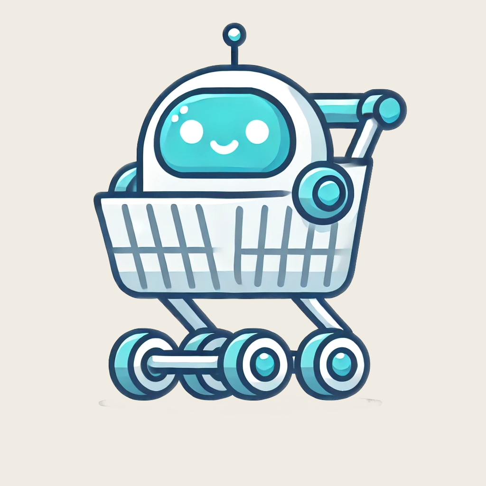

Grogen turns what you have and what you can spend into meal ideas and a grocery list. It works in two directions: give it recipes and it produces an organized shopping list with cost estimates, or give it the ingredients already in your kitchen and it suggests meals you can make from them. Servings, budget, and dietary preferences like high protein or no dairy shape the result.
It is a full stack side project I built solo: React front end, Express and MongoDB back end, OpenAI for generation, JWT auth, and Stripe for the paid tier.
Architecture
The front end is a React app styled with Tailwind, using Radix primitives for the accessible interactive pieces. The back end is an Express server with Mongoose over MongoDB, storing each user's account, pantry contents and bookmarked recipes.
Authentication is email and password, hashed with bcrypt and exchanged for a JWT. A small API client wrapper on the front end attaches the token to every request, so no component has to think about auth headers.
The one decision I would call load bearing is that the OpenAI key never reaches the browser. Every generation call goes through my own /api/openai/chat-completions endpoint, which holds the key server side, forwards the request, and returns a generic "Generation failed" message on error rather than passing the upstream error body back. Putting the key in the React bundle would have been one line of code and would have published it to everyone who opened the site.
Generation
Most calls run against a chat model with response_format: json_object, so the model returns structured recipes rather than prose I have to scrape. Model output is not guaranteed well formed, though, so the parser tries JSON.parse first and falls back to splitting the response into sections on the recipe headings when that fails. That fallback is the difference between a bad response degrading and the whole feature breaking.
Some pieces are more interesting than plain generation:
- Photo ingredient detection. You can photograph your fridge or pantry and the app sends the image to a vision capable model, which reads it back as a list of ingredients you can generate meals from. It fails gracefully with a clear message when it cannot make anything out of the picture.
- Ingredient swaps. Any ingredient can be swapped for alternatives. Because each line carries a price estimate, the app parses the price out of both the old and the new ingredient and adjusts the running total rather than regenerating the entire list.
- Refinements. A generated list can be pushed cheaper, simpler, quicker, or higher protein without starting over.
Tiers and gating
{kind=link}

There are three tiers, described in a single configuration module that the rest of the app reads from:
- Free trial for signed out visitors, with low daily limits so the app is usable before committing to an account
- Free member, which raises the limits and unlocks the saved pantry and recipe bookmarks, since both need somewhere to persist
- Premium at $4.99 a month or $29 a year, for unlimited refinements, budget optimization, pantry aware planning and weekly meal plans
Keeping every limit and gate in one config file, rather than scattering conditionals through components, meant that changing what a tier includes was a single edit. Each feature declares its own anonymous limit, member limit, whether it needs an account, and the upgrade copy shown when someone hits the ceiling.
Honest limitation: daily usage counts currently live in the browser's local storage, so they shape the experience rather than enforce it, and anyone willing to open dev tools can reset them. The account and payment state is server side, but the counters should be too. That is the first thing I would move if this went live, and it is the same lesson I applied later when I built a Chrome extension and put its entitlement checks in the service worker instead of the UI.
Where it got to
The app works end to end: accounts, pantry, bookmarks, both generation directions, photo detection, swaps and the Stripe checkout path. I also wrote an onboarding tutorial overlay, since the two directional flow is not obvious on first load, and drafted the app store listing, privacy policy and support pages for a release I have not made.
It predates most of my professional work and it shows in places, but it is the project where I first built a complete product on my own: auth, a database, a paid tier, a third party API I had to keep secret, and a UI someone who is not me could use.